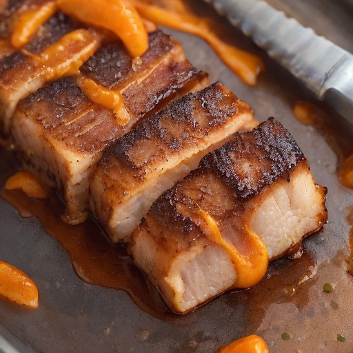

サイド
炙りチャーシュー × 濃厚焦がしにんにく醤油：悪魔の甘酸っぱさ！

炙りチャーシューの旨みを存分に味わえる、濃厚焦がしにんにく醤油で仕上げた、悪魔的な甘酸っぱさ！ 意外な組み合わせで、食欲を刺激する一品に。
💡 こんな時・こんな人におすすめ！
パーティーやBBQに、お酒と合わせてどうぞ！
📋 必要な材料（ポストイット風）
材料リスト 1
- 炙りチャーシュー1枚
- 濃厚焦がしにんにく醤油大さじ2
- お好みで: 砂糖大さじ1
材料リスト 2
- お好みで: 蜂蜜大さじ1
- お好みで: オリーブオイル大さじ1
🍳 作り方ステップ
1
1. 炙りチャーシューは、両面に軽く塩を振る。
2
2. 熱したフライパンで、濃厚焦がしにんにく醤油と砂糖、蜂蜜を加え、混ぜて煮詰める。
3
3. 炙りチャーシューを、濃厚焦がしにんにく醤油に浸して、全体に味が染みるようにする。
4
4. お好みで、オリーブオイルを少々加え、お好みで仕上げる